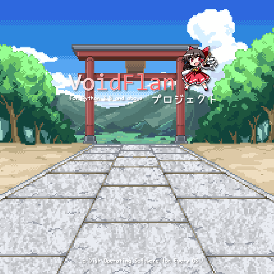

此处提及的 "VoidFlan Project" 正在制作中且尚未完工。 本项目是 Meltice "MPGA / PY OS" 的衍生，和原作者 Meltice 无关，也和其他公司以及组织社团什么的无关。 对项目开发有兴趣吗？您随时可以来我们的仓库提 Pull Request，我们在审查后会马上同意你的贡献。
(C) Flandre Studio 芙兰社 2022--2026，(C) 0x1c Studio / 0x1cSoft 2022--2023